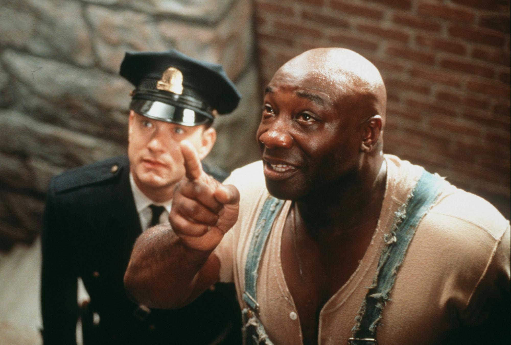
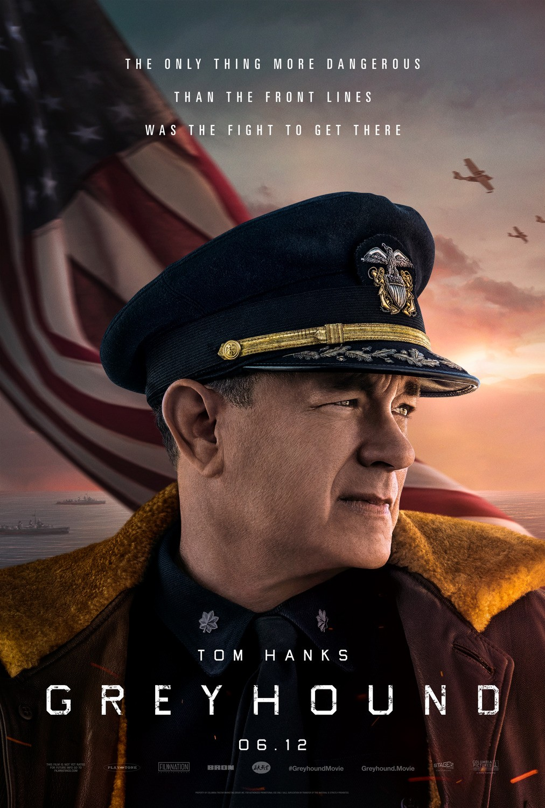

Tom Hanks, in full Thomas J. Hanks, (born July 9, 1956, Concord, California, U.S.), American actor whose cheerful everyman persona made him a natural for starring roles in many popular films. In the 1990s he expanded his comedic repertoire and began portraying lead characters in dramas.
Forrest Gump is a 1994 American romantic comedy-drama film directed by Robert Zemeckis and written by Eric Roth.

The Green Mile is a 1999 American fantasy drama film written and directed by Frank Darabont and based on Stephen King's 1996 novel of the same name.
The Terminal is a 2004 American comedy-drama film produced and directed by Steven Spielberg and starring Tom Hanks, Catherine Zeta-Jones, and Stanley Tucci. The film is about an Eastern European man who becomes stuck in New York's John F. Kennedy Airport terminal when he is denied entry into the United States and at the same time is unable to return to his native country because of a military coup.
Greyhound is a 2020 American war film directed by Aaron Schneider and starring Tom Hanks, who also wrote the screenplay. The film is based on the 1955 novel The Good Shepherd by C. S. Forester, and also stars Stephen Graham, Rob Morgan, and Elisabeth Shue.
